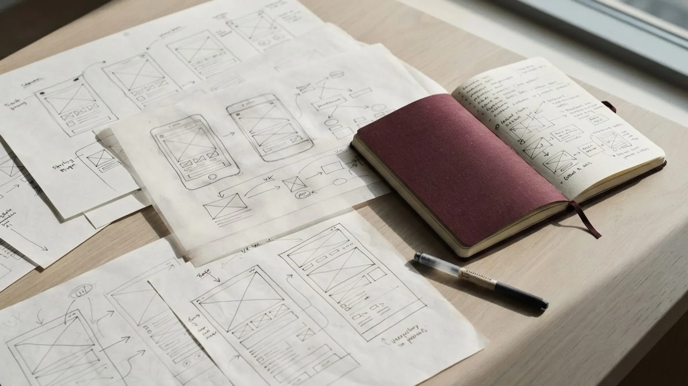

Learn the context
Built enough subject-matter understanding to make useful decisions instead of treating the work as a purely visual exercise.
Azilis Advisory
A 14-week practicum inside a Danish sustainability startup, focused on research, project development and translating complexity into clearer, more usable concepts.

Illustrative portfolio imagery only. No confidential company materials are shown.
The underlying platform, designs, structure, content and project materials are protected by a confidentiality agreement. This case study therefore focuses only on high-level responsibilities, process and skills that can be shared safely.
I joined Azilis Advisory for a practicum where I was trusted with a substantial individual project and regular feedback from the founder and team. The work required me to research unfamiliar subject matter, organize large amounts of information, iterate on concepts and communicate progress clearly across both in-person and remote collaboration.

Built enough subject-matter understanding to make useful decisions instead of treating the work as a purely visual exercise.
Broke dense information into clearer structures and worked toward an experience that would be easier to understand and navigate.
Worked through multiple rounds of development, feedback and refinement rather than treating the first solution as the final one.
Used meetings, shared documents and video walkthroughs to communicate progress and keep the project moving around scheduling constraints.
Good project work is not just about having ideas. It is about understanding the problem deeply enough to make those ideas useful.
The practicum strengthened my confidence working autonomously, navigating ambiguity and communicating complex information visually. It also gave me first-hand experience of a trust-based Nordic work environment where initiative and ownership were expected.